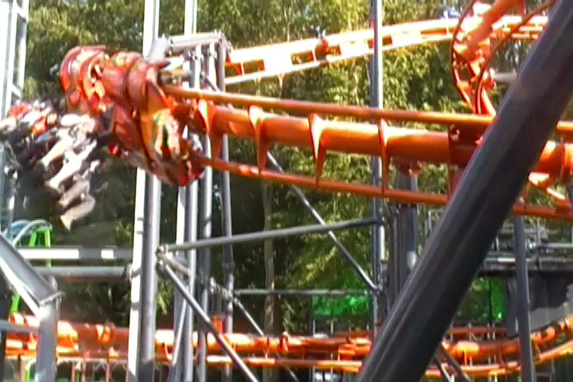

| |

Cobra Review

For today's review, we're going back in time to my last visit to Tivoli Friheden to ride Cobra. This was the parks inverted coaster. And this ride was...intersting to say the least. No really. This coaster was one of those rides that's just....it looked like a death trap. And given that this ride literally derailed right when it first opened, that's giving the term "Death Trap" a new literal meaning (luckily, nobody died or got seriously injured in the accident). Also, this is made by a company called Sartori. And...not only have they made very few coasters, but pretty much all their other rides are Wacky Worms. This is essentially the only full sized coaster they ever made. In fact, the only other big coaster they did was a clone of this that runs at fairs in Saudi Arabia. So if for some reason, you have a craving for this ride and are sad that you missed it at Tivoli Friheden, well now you know where to find a clone of this ride. So yeah. We're going to ride an Inverted coaster from the company that makes Wacky Worms. Uh...this should be intersting. Let's see what they can do. So we got in the cars, pulled down the restraints, and away we went. We went around a turn, making it straight to the lifthill. Oh boy. Just think to yourself, "I'm on an inverted coaster that derailed when it first opened, made by the Wacky Worm company. I'm so f*cked". And considering that this ride had a lifthill that really seemed to be struggling to make it up the hill. Seriously, it felt like the chain was going to snap and we'd just roll on down. But eventually, we made it to the top, and there's the first drop. Oh crap. This thing was steep. And it...F*CK!!! We dived into the twisted first drop, right into a twisted mess of track and supports. We gained some speed, but the bottom of the first drop was...awkward. It sort of shaked. Almost as if this was made of chewing gum and rubber bands. Like the company was used to making Wacky Worms and isn't used to making full sized coasters. We then headed up into a tiny little immelmahn. Yeah. This thing had a bad smack to it. But honestly, it didn't hurt THAT bad. But I think the thick padding helped with that. We got out of the immelmahn, and straight into a cobra roll. We expected some headbanging, but it actually wasn't that bad. It just felt...awkward. Like you were expecting it to bash you, but it spared your head. And hey. The cobra roll was actually kind of fun. I kind of liked this. OK, we exited out of the cobra roll after flipping upsidedown twice. There's still plenty more ride to go through. Oh, and there's something underneath the ride. It looked really weird and gave us these footchoppers. We then headed into this hill that didn't give us any airtime. All this did was reduce our speed and felt...really awkward. We then headed into this helix drop and...the ride began to shake some more. No really. It's like the coaster was cold and shivering. It just felt weird and awkward. And of course, this continued as we went into the helix. We then dipped down into some trims. Yeah. it's a good idea to get this to stop. We went around a turn and into the final brake run. Uh...yeah. So that was Cobra. You know when you have someone way in over their head with some assignment, and they do a better job than you expected, but it's still not really good and feels clunky and awkward, but you can see that they gave it a good try? That's this coaster in a nutshell. In some ways, it exceeded my expectations as it was kind of fun, didn't try to kill me, and was actually a better coaster than the really bad and painful SLCs. But at the same time, it still felt like it was made of chewing gum and you can tell that this manufacter doesn't do big coasters. I doubt another coaster like this will ever be built thanks to the derailing accident. Honestly, I'm surprised that they built the clone at the Saudi Arabian fairs. But now that I think about it, this is the PERFECT type of coaster for a carnival. It fits RIGHT IN with other carnival style coasters and just REALLY feels like a carnival coaster. But as for actual big real theme parks, why should they when you can buy a B&M Invert. Or if not that, a Vekoma SLC (Yeah. This ride is better than the bad SLCs with a lot of headbanging. But if the park runs it right and keeps it smooth, then the SLC is better). Hell, those new Vekoma Inverted coasters. I may not have ridden one yet, but they look fun (I'll ride that next time I'm back in Europe). It's not that good, and I'm not sad that it's gone. I'm sure the Eurofighter that's replacing it will be a much better ride (even if that looks short as hell). But at the same time, I'm glad I got the chance to ride it once. Oh well.
5/10
Location: Tivoli Friheden
Opened: 2008
Died: July 15, 2022
Built by: Sartori
Last Ridden: June 19, 2014
Cobra Photos


Home
|